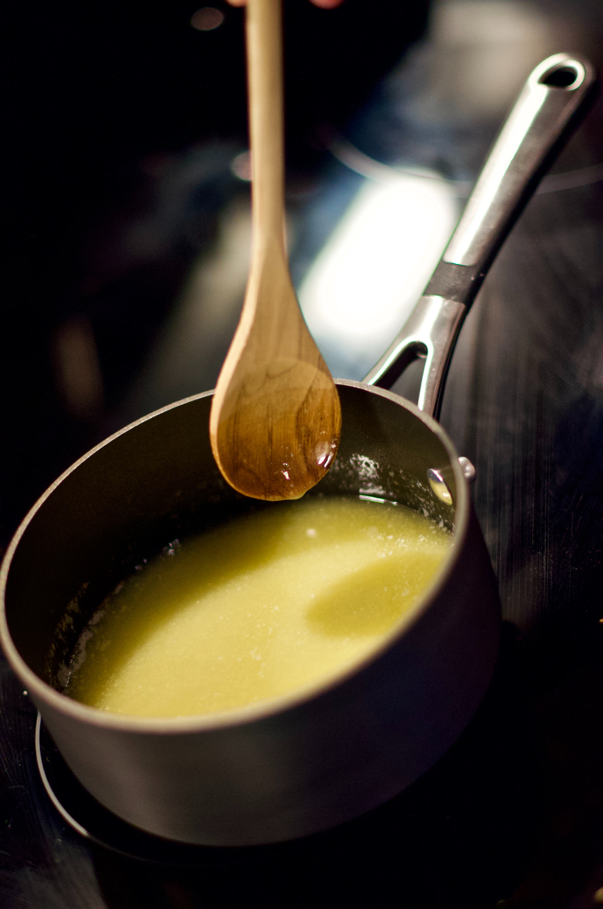
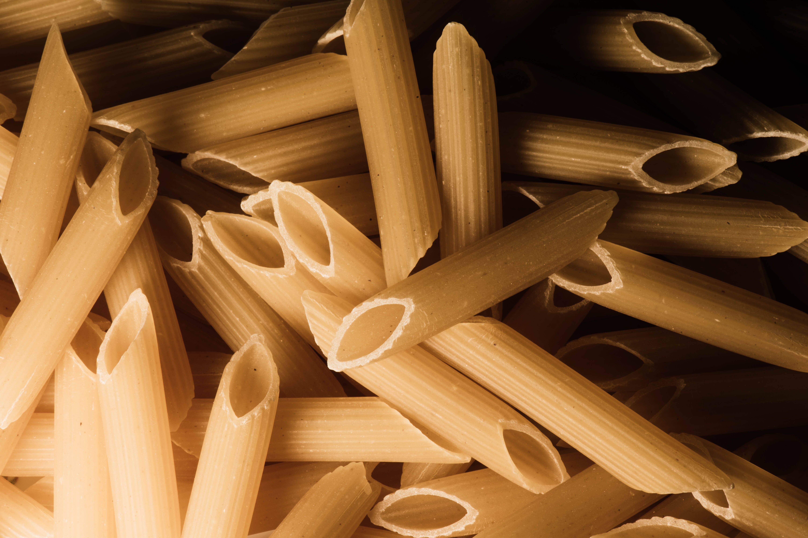
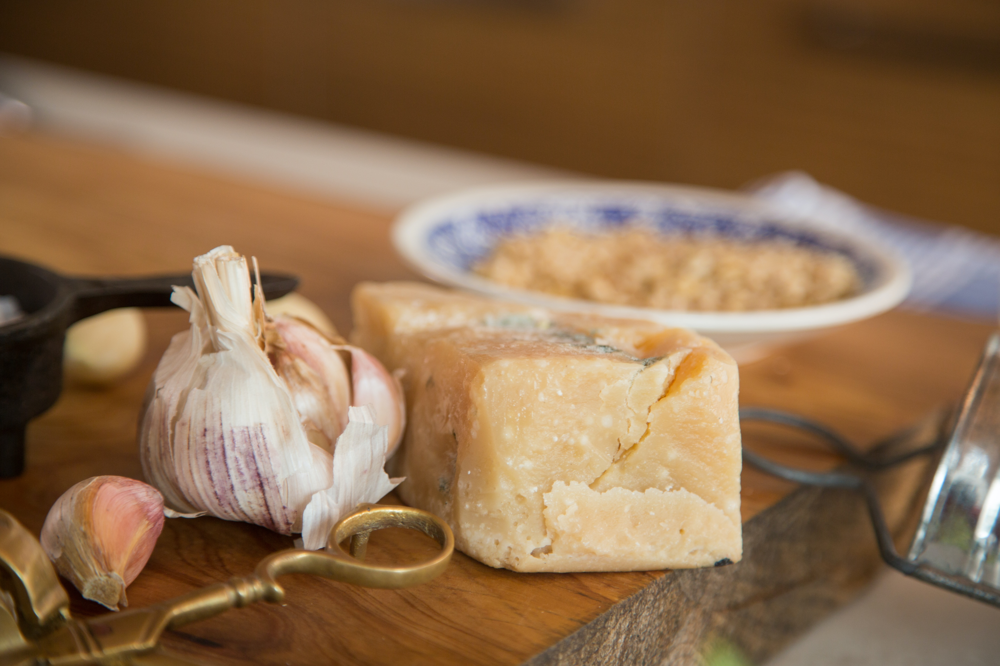
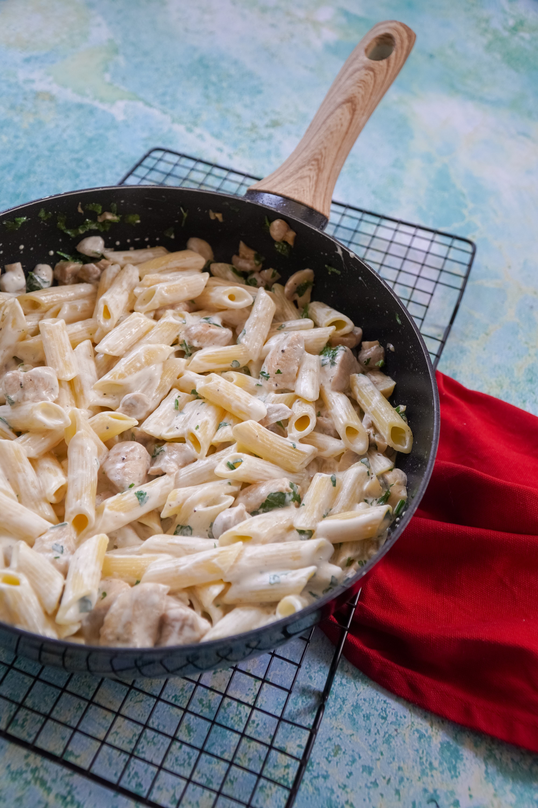

Ingredients:
- 1 pound penne pasta
- 1 cup unsalted butter
- 2 cups heavy cream
- 2 cups grated Parmesan cheese
- 1/4 teaspoon salt
- 1/4 teaspoon black pepper
Instructions:
- Cook the penne pasta in a large pot of salted boiling water according to package instructions, until al dente. Drain and set aside.
- In a large saucepan, melt the butter over medium heat. Add the heavy cream and bring to a simmer.
- Reduce the heat to low and stir in the grated Parmesan cheese, salt, and black pepper. Stir until the cheese has melted and the sauce is smooth.
- Add the cooked penne pasta to the saucepan and stir until the pasta is coated with the sauce.
- Serve hot and enjoy your delicious Penne Alfredo!



